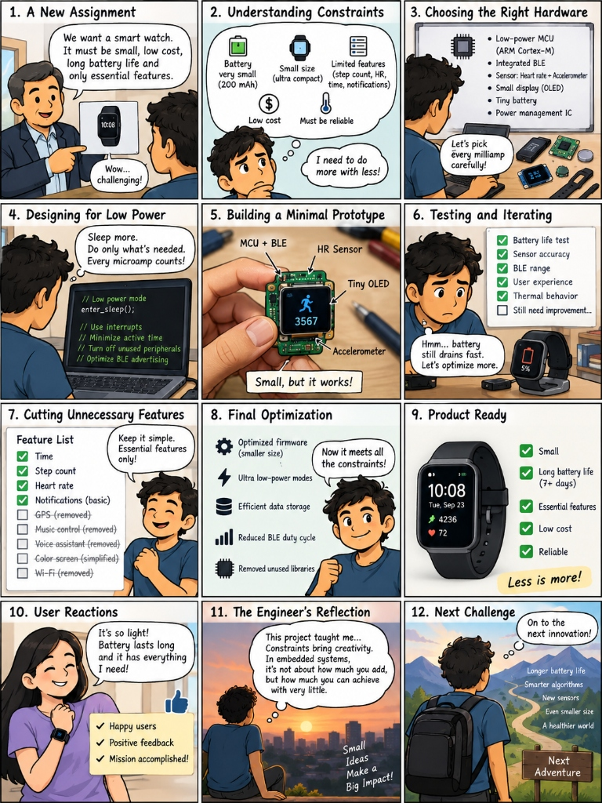

Why Program on Constrained Devices?
When software engineers trained on modern laptops or cloud servers first approach embedded systems, they experience profound culture shock. In web or cloud software, compute power is virtually limitless: gigabytes of RAM, multi-gigahertz processors with dozens of cores, terabytes of NVMe storage, and high-level runtimes that manage memory automatically through garbage collection. If a cloud server runs low on RAM, the cloud orchestrator simply spins up another virtual machine.
In the physical world, over 98% of all microprocessors manufactured globally are not housed inside personal computers or servers — they are embedded inside physical devices: automotive antilock braking systems, flight control computers, smartwatches, pacemakers, and industrial robots. These devices operate under extreme physical and electrical constraints:
A 2023 Dell Technologies technical paper states:
“The industry sold 349 million PCs in 2021 and 31 billion microprocessors, meaning 98.9% went into non-PC devices.”
— Dell Technologies Technical Paper (2023), Edge Computing and Embedded Architectures.
- Severe Memory Scarcity: Often only 16 KB to 256 KB of volatile SRAM and 64 KB to 1 MB of Flash ROM. There is no virtual memory, no swap file, and zero margin for memory fragmentation.
- Strict Energy Budgets: Powered by tiny 150 mAh coin-cell batteries or energy harvesting systems that must run uninterrupted for 3 to 10 years without recharging.
- Hard Real-Time Latency Deadlines: When an autonomous drone tilts or a car's airbag sensor detects deceleration, the response must occur within microseconds. A delayed calculation is not merely slow — it is a fatal system failure.
- Direct Physical Consequences: A bug in web software produces a 404 page; a bug in embedded firmware can burn out a motor H-bridge, crash a $50,000 drone, or deliver a lethal insulin dose to a medical patient.
Learning to program on constrained devices transforms you from a code consumer into a true systems engineer — one who understands how software instructions physically command electrical electrons, silicon transistors, sensors, and actuators in the real world.
0.1 The Embedded Engineer's Journey: The 12 Steps from Idea to Silicon
How does a raw, constrained concept — such as an ultra-compact smartwatch that must run for a week on a battery smaller than a coin — transform into an industrial product worn by millions? The comic below captures the authentic, thrilling journey of an embedded systems engineer navigating physical reality:

Let us break down each of these 12 milestones to understand the exact technical mindset and engineering discipline required to build world-class embedded firmware:
1. A New Assignment — The Vision vs. The Reality
PHASE: INCEPTIONLeadership or a client arrives with an ambitious vision: "We want a smartwatch. It must be tiny, ultra-low cost, run for over 7 days on a single charge, and deliver essential health tracking." In desktop or cloud software, developers take resources for granted. In embedded engineering, every product begins with a challenge of physical limits. The junior engineer feels intimidated; the master embedded architect smiles because they know that constraints are where engineering brilliance begins.
2. Understanding Constraints — The Physics of Scarcity
PHASE: ANALYSISThe engineer calculates the physical envelope: A 200 mAh lithium-polymer cell holds merely ~0.74 Watt-hours of energy. The enclosure allows a PCB no larger than a postage stamp with zero room for cooling fans or heat spreaders. The Bill of Materials (BOM) target allows only pennies per component across 500,000 manufactured units. The firmware cannot crash or require a reboot. The realization strikes: "I need to do more with less!"
3. Choosing the Right Hardware — Picking Every Milliamp
PHASE: HARDWARE SELECTIONEvery microamp on the board must justify its existence. The engineer selects an energy-optimized microcontroller (such as an ARM Cortex-M0+ or Cortex-M4 with integrated BLE radio), a MEMS 3-axis accelerometer that draws only 5 μA in autonomous wake-on-motion mode, an optical PPG heart rate sensor, a low-leakage OLED or Memory-in-Pixel display, and a Power Management IC (PMIC) with sub-microamp quiescent current.
4. Designing for Low Power — The Philosophy of Deep Sleep
PHASE: FIRMWARE ARCHITECTURE
A 200 mAh battery running for 7 days (168 hours) requires an average continuous current under 1.19 mA! If the CPU core draws 15 mA when running, the firmware must spend over 95% of its time completely asleep. The engineer structures the architecture around hardware interrupts: the CPU sits in deep sleep (enter_sleep() / WFI), wakes up in under 5 microseconds when a sensor interrupt fires, processes the step or heart rate sample in 800 microseconds, and instantly returns to sleep.
5. Building a Minimal Prototype — First Silicon Pulse
PHASE: PROTOTYPINGThe bare PCB is assembled. Soldering micro-pitch ICs and debugging over an SWD hardware probe, the engineer flashes the first C binary. The tiny OLED screen flickers to life displaying a step-counter icon and 3,567 steps. Wires and probe leads are exposed, but it works! The satisfaction of seeing physical hardware respond to your C code for the first time is unmatched.
6. Testing & Iterating — Confronting Real-World Physics
PHASE: VERIFICATIONReality hits hard during laboratory testing. Sensor accuracy is good, but the battery drains to 5% in only 12 hours! An oscilloscope and current probe reveal the culprit: floating GPIO pins acting as parasitic antennas, unconfigured internal pull-ups leaking 150 μA, and BLE advertising packets firing every 20 milliseconds instead of dynamically backing off. The diagnostic loop begins: "Hmm... battery still drains fast. Let's optimize more."
7. Cutting Unnecessary Features — The Wisdom of Subtraction
PHASE: FEATURE SCOPINGAmateur engineers try to add every feature: GPS, Wi-Fi streaming, complex audio playback, voice assistants, and heavy 60 FPS animations. A professional embedded engineer knows that perfection is achieved not when there is nothing more to add, but when there is nothing left to take away. The team ruthlessly trims: GPS (drains 25 mA continuous — removed!), Wi-Fi (too power-hungry — removed!), Voice assistant (requires megabytes of RAM — removed!). They preserve what truly matters: Time, Step Count, Heart Rate, and Basic BLE Notifications.
8. Final Optimization — Deep Silicon Hardening
PHASE: OPTIMIZATION
The engineer dives into firmware refinement: compiling with -Os size optimization, stripping out unused standard C library overhead, switching floating-point algorithms to fixed-point integer math, compacting data structures into packed bitfields, and adjusting BLE advertising intervals to an adaptive duty cycle. Idle current plummets from 350 μA down to 18 μA. "Now it meets all the constraints!"
9. Product Ready — "Less is More!"
PHASE: PRODUCTIONThe manufactured smartwatch rolls off the automated surface-mount assembly line. It is compact, featherlight, costs a fraction of competing devices, runs for over 7 full days on a single charge, and operates with rock-solid determinism. It embodies the supreme law of embedded engineering: Less is more!
10. User Reactions — The Joy of Real-World Impact
PHASE: REAL-WORLD IMPACTUsers put the watch on and love it: "It's so light! The battery lasts all week, and it has everything I actually need without overwhelming me!" In web development, code lives inside an abstract cloud server. In embedded systems, your software is a physical companion worn on a human wrist, guiding an electric vehicle, or regulating a patient's heartbeat. That emotional connection is unforgettable.
11. The Engineer's Reflection — Constraints Bring Creativity
PHASE: WISDOMLooking out over the city at sunset, the engineer reflects on what the project revealed: "Constraints bring creativity. In embedded systems, it's not about how much code or memory you can add, but how much you can achieve with very little. Small ideas make a big impact!"
12. Next Challenge — The Infinite Frontier of Embedded Tech
PHASE: LIFELONG MASTERYWith backpack in hand, the engineer steps onto the trail toward the next mountain: "On to the next innovation!" Ahead lies a world hungry for embedded intelligence: edge AI / TinyML neural networks running on microcontrollers, medical biosensors that detect illness before symptoms emerge, energy-harvesting IoT nodes that need no battery at all, and autonomous exploration robots. The journey never ends.
What If You Know Nothing About Any of These Topics Right Now?
Do you look at terms like ARM Cortex-M, hardware registers, interrupt vectors, linker scripts, BLE duty cycles, and volatile pointers and feel a wave of intimidation?
Here is the industry's most liberating truth: Every single world-class embedded engineer started at exact zero.
- You do NOT need an electrical engineering degree to master embedded firmware. You do not need to design circuit boards from scratch or calculate transistor doping levels.
- You do NOT need prior hardware experience: Hardware peripherals are simply memory addresses in C! When you write
*GPIO_ODR = 0x01;, you are simply assigning a value to a pointer. It is pure C programming paired with curiosity. - This course was designed precisely for your starting point: We assume zero prior microcontroller experience. Step-by-step, across 25 carefully structured chapters and 5 milestone projects, we demystify every layer — from raw bits and C compilation pipelines to non-blocking event loops, finite state machines, and real-time drivers.
Do not fear the silicon. If you bring curiosity and consistency, this curriculum will turn complex embedded architecture into second nature.
Why Embedded Engineering Is the Most Demanding Skill Forever
In software engineering, trends come and go with dizzying speed. Web frameworks, JavaScript libraries, and mobile SDKs emerge, dominate for three years, and become obsolete.
Embedded Systems and C Programming do not expire. Embedded C code written in 1995 still controls automotive braking systems, satellite payloads, and industrial factories today. Why is this skill in massive, evergreen demand?
1. The 98.9% Silicon Domination
As Dell Technologies documented, out of 31 billion processors sold annually, 98.9% power physical non-PC devices. Every electric car contains over 100 microcontrollers. Every modern hospital room has 40+ embedded devices. The physical world is expanding, and every single chip requires embedded firmware.
2. The Ultimate AI Moat
Generative AI can easily synthesize basic HTML, CSS, and Python scripts. But AI cannot attach an oscilloscope probe to a high-speed SPI bus, isolate a 50-nanosecond ground bounce voltage spike, or verify thermal drift on a jet engine sensor. The bridge between code and physical silicon is the safest, highest-leverage career moat in technology.
3. Extreme Career Resilience
There are millions of web developers, but engineers who truly understand memory layouts, hardware interrupt timing, registers, and low-power silicon are extraordinarily rare. Companies in defense, medical tech, aerospace, automotive, and robotics compete fiercely for embedded talent.
4. The Pride of Physical Creation
When you write embedded software, you don't just see pixels change in a browser window. You watch motors spin, sensors measure living heartbeats, radio waves transmit across miles, and physical machines come alive. You become a creator of the physical future.
0.2 Real-World Case Studies: The Triad of Modern Embedded Systems
To understand how constrained embedded systems operate, let us examine three canonical real-world systems spanning consumer wearables, autonomous aerospace robotics, and safety-critical medical engineering:
0.3 The Anatomy of Embedded Hardware Components
Every embedded device — regardless of scale — is fundamentally organized into five interacting subsystems:
1. The Brain: Microcontroller (MCU) vs. Microprocessor (MPU)
A standard computer CPU (such as an Intel Core i7 or Apple M3) is a microprocessor: it contains raw computation cores but requires external RAM chips, external flash drives, and external power regulators.
A microcontroller (MCU) is an entire self-contained computer on a single slice of silicon smaller than a fingernail. It integrates:
- CPU Core: e.g., ARM Cortex-M0+, Cortex-M4F, Cortex-M7, or RISC-V RV32IM.
- Non-Volatile Flash Memory: Stores machine bytecode permanently (typically 32 KB to 2 MB). Code executes directly from Flash via the instruction bus (XIP — eXecute In Place).
- Static RAM (SRAM): Volatile memory storing global variables, task buffers, and the call stack (typically 8 KB to 512 KB). SRAM draws zero refresh current and holds data down to microamp leakage levels.
- Autonomous Hardware Peripherals: Hardware modules that operate independently of the CPU:
- Timers & PWM Units: Generate exact sub-microsecond electrical pulses for motor speed control.
- Analog-to-Digital Converters (ADC): Convert continuous physical voltages into discrete numbers.
- Direct Memory Access (DMA): Streams data directly between serial ports and RAM without waking or loading the CPU.
- Nested Vectored Interrupt Controller (NVIC): Halts the CPU and dispatches urgent hardware interrupts in under 12 clock cycles.
2. The Senses: Sensors and Transducers
Sensors translate physical phenomena — heat, light, magnetic fields, sound waves, acceleration, pressure — into electrical signals:
- Inertial Measurement Units (IMUs): Measure angular velocity (gyroscopes) and linear acceleration (accelerometers) via microscopic MEMS (Micro-Electro-Mechanical Systems) vibrating tuning forks. In a drone, the IMU is sampled at 4,000 to 8,000 times per second over SPI.
- Photoplethysmography (PPG) Sensors: Shine green and infrared light through human capillaries. By measuring the reflected light variations over time, embedded algorithms extract pulse rate, pulse variability, and arterial oxygen saturation (SpO2).
- Ultrasonic Bubble Detectors: In a medical intravenous infusion pump, piezo crystals emit ultrasound across the fluid tube. If an air bubble passes, the acoustic impedance shifts instantly, triggering an emergency stop before air reaches a patient's vein.
3. The Muscle: Actuators and Drivers
Microcontroller pins output tiny electrical signals: 3.3 Volts at a maximum of 8 to 20 milliamps. You cannot connect a high-power motor or medical valve directly to an MCU pin without instantly vaporizing the silicon!
Actuators convert software decisions into mechanical work, heat, or light through specialized power electronics:
- MOSFET Gate Drivers & H-Bridges: Direct high-voltage, high-current battery power (e.g. 24V, 40A) to brushless drone motors using Pulse Width Modulation (PWM) duty cycles.
- Linear Resonant Actuators (LRA): Driven by specialized haptic ICs using AC waveforms to produce sharp clicks, subtle heartbeats, or gentle buzzes in a smartwatch.
- Peristaltic Stepper Motors & Safety Clamps: In medical infusion pumps, stepper motors rotate accurate cams to advance medication fluid in exact nanoliter increments. If any sensor flags an occlusion or bubble, a mechanical spring-loaded pinch solenoid clamps the tube shut in under 5 milliseconds.
0.4 Why C Remains the King of Constrained Embedded Systems
Developers frequently ask: "Why don't we build drone firmware or smartwatch operating systems in Python, Go, or JavaScript?"
The answer lies in the fundamental physics and resource mathematics of constrained hardware:
| Language / Runtime | Minimum RAM Required | Execution Model | Timing Determinism | Power Efficiency |
|---|---|---|---|---|
| Python / MicroPython | > 256 KB – 16 MB | Interpreted bytecode + heap objects | Non-deterministic (Garbage collection pauses) | Poor (10×–50× slower CPU cycle burn) |
| JavaScript / Node.js | > 32 MB – 128 MB | V8 JIT / Bytecode VM | Unpredictable jitter (Stop-the-world GC) | Very poor for battery-operated nodes |
| Embedded C (ISO C99/C11) | < 1 KB – 16 KB | Direct native machine instructions | Exact cycle-by-cycle determinism | Maximum ($I_{dynamic} \propto \text{cycles}$) |
The Garbage Collection Paradox in Life-Critical Systems
High-level managed languages rely on Garbage Collection (GC) to automatically reclaim unused heap memory. During a garbage collection cycle, the runtime engine pauses thread execution to sweep pointers. If a drone's flight stabilization PID loop or an automotive steering ECU experiences a sudden 15-millisecond GC pause while traveling at 60 mph, the vehicle loses control and crashes before the software resumes. Embedded C provides zero hidden runtimes, zero garbage collection pauses, and absolute predictable latency.
0.5 Code Comparison: Desktop Software Mindset vs. Constrained Embedded C
Compare how a desktop developer instinctively approaches reading a sensor and driving an actuator versus how a disciplined embedded firmware engineer writes the same logic:
Compare Architecture: Sensor-to-Actuator Control Loop Scrollable View
❌ Desktop Mindset (Crashes Constrained MCU)
/* Dynamic heap allocation, floating point, blocking */
#include <stdlib.h>
#include <stdio.h>
void control_loop(void) {
/* DANGEROUS: Heap allocation fragments SRAM */
float *buffer = (float *)malloc(1024 * sizeof(float));
/* Blocking delay burns battery & misses events */
delay_ms(100);
float temp = read_analog_temp();
if (temp > 50.0f) {
printf("Alert: Overheat: %f\n", temp);
set_motor_speed(100);
}
free(buffer); /* Risk of leak! */
}
Flaws: Dynamic allocation exhausts 16 KB SRAM, delay_ms(100) burns millions of CPU cycles, printf bloats Flash by 25 KB, floating point triggers software emulation on Cortex-M0.
✔ Constrained Embedded C (Industrial Grade)
#include <stdint.h>
#include <stdbool.h>
/* Static compile-time allocation in Flash & BSS */
#define OVERHEAT_THRESHOLD_MDEGC (50000) /* Millidegrees */
typedef struct {
int32_t latest_temp_mdegc;
uint32_t last_poll_ms;
} ThermalController_t;
static ThermalController_t s_controller = { 0, 0U };
void control_step_nonblocking(void) {
const uint32_t now = millis();
/* Non-blocking delta math: 0% CPU wasted */
if ((now - s_controller.last_poll_ms) >= 100U) {
s_controller.last_poll_ms = now;
/* Integer fixed-point math: fast on any core */
s_controller.latest_temp_mdegc = bsp_temp_read_mdegc();
if (s_controller.latest_temp_mdegc > OVERHEAT_THRESHOLD_MDEGC) {
bsp_actuator_fan_set(true);
} else {
bsp_actuator_fan_set(false);
}
}
}Safety: Zero heap memory allocation, deterministic integer fixed-point arithmetic, non-blocking timekeeping, runs safely on a $0.50 microcontroller for 10 years.
0.6 Interactive Knowledge Check
Test your fundamental understanding of constrained device architectures, sensors, and actuators.
malloc/free) dangerous in long-running constrained embedded devices?
0.7 Hands-On Engineering Laboratories
Execute these 5 introductory engineering investigations to analyze physical constraints and subsystem interactions.
Assignment 1: Smartwatch Power Budget Calculation
Task: Given a smartwatch with a 200 mAh lithium battery: Active CPU draws 15 mA; Low-power sleep draws 15 μA; Heart-rate sensor draws 2 mA (active 10% of the time). Calculate the exact expected battery life in days if the firmware spends 95% of its time asleep versus if bad firmware spins in a busy-wait loop 100% of the time.
Assignment 2: Drone Sensor-to-Actuator Latency Budget
Task: In a quadcopter drone, map the entire physical execution pipeline: SPI Gyro read time → Complementary/Kalman filter math → PID computation → DShot motor output command. Calculate the maximum permissible execution time per loop to achieve an 8.0 kHz loop rate (125 μs total budget).
Assignment 3: Embedded Memory Footprint Audit
Task: Write a simple C program that prints "Hello Embedded World" using printf. Compile it with GCC for an ARM Cortex-M target. Run arm-none-eabi-size to see how many kilobytes of Flash ROM standard C library printf consumes, and calculate what percentage of a 64 KB microcontroller it monopolizes.
Assignment 4: Medical Safety Interlock Simulation
Task: Write an FSM in C simulating a medical infusion pump: states PUMPING, PAUSED, AIR_ALARM, OCCLUSION_ALARM. Simulate an air bubble sensor event and verify that within 1 single iteration, the actuator enable signal is driven to 0 (hard shutoff) and the alarm buzzer is asserted.
Assignment 5: Fixed-Point vs. Floating-Point Benchmark
Task: Implement temperature conversion using both 32-bit floating point math (float c = (f - 32.0f) * (5.0f / 9.0f)) and integer fixed-point millidegree math (int32_t c_mdeg = ((f_mdeg - 32000) * 5) / 9). Benchmark both on an ARM Cortex-M0 core lacking a hardware FPU and measure the execution cycle speedup.
Official References, Research Papers & Standards
Deepen your engineering foundation with canonical publications and official standard specifications:
The Art of Designing Embedded Systems
Classic textbook exploring memory constraints, real-time deadlines, hardware-software partitioning, and physical engineering realities.
View Official Resource →IEC 62304: Medical Device Software – Software Life Cycle Processes
Global standard governing architectural segregation, risk management, and failure mitigation in embedded medical devices.
View Official Resource →Design and Control of Autonomous Aerial Vehicles
Seminal engineering analysis on sensor fusion latency, multi-rate PID control, and ESC actuator response in drones.
View Official Resource →Microprocessor Volume & Non-PC Embedded Architectures
Global analysis of computing distribution revealing that 98.9% of all 31 billion microprocessors sold annually power non-PC constrained embedded systems.
View Official Resource →